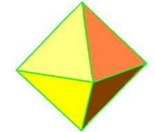
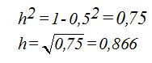

Octaedro.- Sus 8 caras iguales son triángulos equiláteros. Cada triángulo equilátero del tetraedro de lado 1, hemos visto que tiene una superficie de 0,433.
Como el octaedro tiene 8 caras multiplicaremos la superficie anterior por 8 y por el valor del cuadrado del lado del triángulo o arista de dicho octaedro:
Calcula el área total de un octaedro de 5 cm. de arista:
En este tema nos dedicaremos a estudiar las superficies que envuelven a los cuerpos geométricos o cuerpos sólidos. Entendemos por cuerpo sólido al que ocupa un lugar en el espacio. Es decir, el que contiene las tres dimensiones (largo, ancho y alto). Si este sólido tiene forma de poliedro, prisma o cuerpo redondo podemos referirnos a los cuerpos geométricos. ÁREAS DE LOS POLIEDROS REGULARES Recordarás que estudiamos los volúmenes de los cinco poliedros regulares. Ahora estudiaremos el cálculo de sus superficies. Los poliedros regulares tienen todas sus caras iguales: 1) Tetraedro.- Sus cuatro caras son triángulos equiláteros
El área total de este cuerpo geométrico lo hallaremos calculando el área de una cara y la multiplicaremos por 4. Para este cálculo necesitamos conocer la apotema o altura de una cara de un poliedro.
La altura de una cara la calculamos a partir de la figura siguiente:
A la arista o lado del triángulo le damos el valor 1 para facilidad de cálculo y no tener que aprender fórmulas. En cada caso, aplicamos los conocimientos básicos de geometría con un poco de sentido común. Primeramente calculamos la altura que la representaremos con h. La hipotenusa vale 1 y un cateto (mitad de la base que mide 1/2). Utilizando el teorema de Pitágoras tendremos:
El área de una cara para cuando la arista vale 1 será:
Cuando el lado del triángulo o arista de una cara valga a el área será:
La arista la elevamos al cuadrado por tomarla en dos dimensiones: largo y ancho arista
Como el tetraedro tiene 4 caras, la superficie total será: